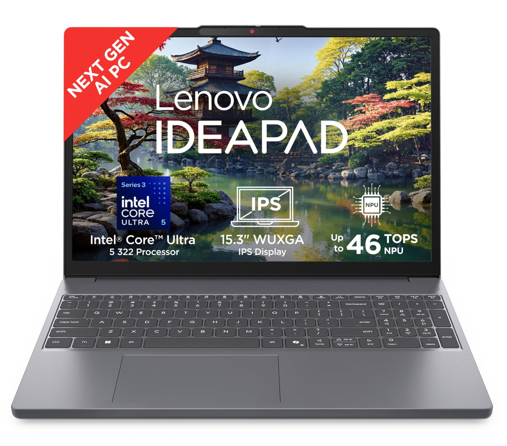
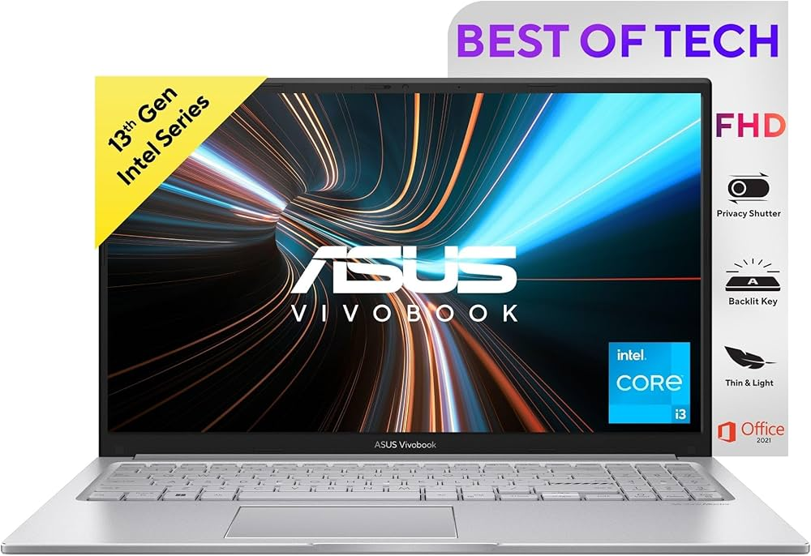
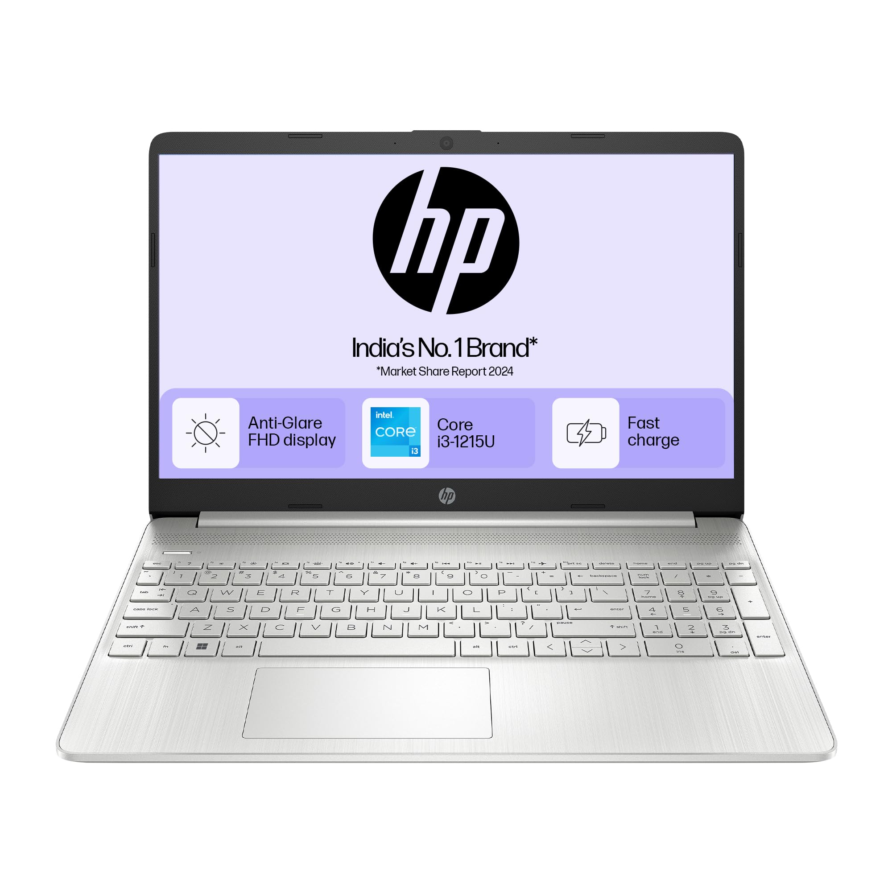

Buying a laptop can be confusing because there are many models with different processors, RAM, storage and prices. This page gives a simple comparison of some laptops to help students choose one.
These laptops are suitable for different types of users such as students, programmers and people who need a laptop for daily work.



| Product | Processor | RAM | Storage | Display | Battery | Price | Warranty | Best For |
|---|---|---|---|---|---|---|---|---|
| HP 15 | Intel Core i5 | 16 GB | 512 GB SSD | 15.6 inch FHD | Up to 8 hours | ₹65,000 | 1 Year | Students |
| Lenovo IdeaPad | AMD Ryzen 5 | 16 GB | 512 GB SSD | 15.6 inch FHD | Up to 9 hours | ₹62,000 | 1 Year | Programming |
| ASUS Vivobook | Intel Core i5 | 16 GB | 512 GB SSD | 15.6 inch FHD | Up to 10 hours | ₹68,000 | 1 Year | Study and Work |
| Dell Inspiron | Intel Core i5 | 8 GB | 512 GB SSD | 15.6 inch FHD | Up to 8 hours | ₹60,000 | 1 Year | Daily Use |
Student Offer: Check the product website for current discounts and student offers.
A good student laptop should have enough RAM, fast storage and a processor that can handle everyday study and programming work.
A simple example of a laptop specification can be written like this:
Processor : Intel Core i5
RAM : 16 GB
Storage : 512 GB SSD
Display : Full HD
There is no single laptop that is best for everyone. Students should compare the specifications, price and warranty before making their final choice.